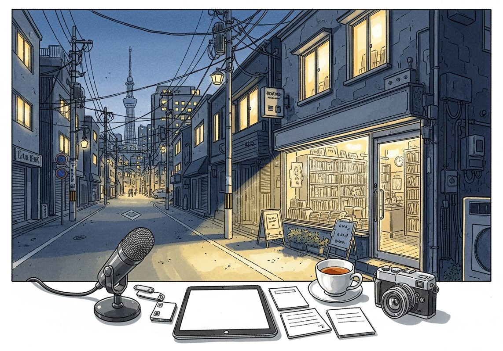

6/23

12:37 生成
The Walt Disney Company
来源：Acquired
原链接：https://www.acquired.fm/episodes/the-walt-disney-company
材料不足：这期需要 transcript 或更完整正文后再做全篇摘要。
- 当前只有节目简介或网页正文；这是播客音频，必须获取 transcript 后才算读完整期。
Vlad Barbalat - Investing $120 Billion in Permanent Capital - [Invest Like the Best, EP.479]
来源：Invest Like the Best
原链接：https://colossus.com/episode/the-power-of-permanent-capital/
本期播客深入探讨了Liberty Mutual Investments首席投资官Vlad Barbalat如何利用其1200亿美元的“永久资本”进行长期、战略性投资，并结合其独特的移民背景和对宏观趋势的洞察，为机构投资者、资产配置者以及对耐心资本和全球经济趋势感兴趣的听众提供了宝贵的视角。
- Liberty Mutual：永久资本的独特优势：本期播客的核心在于Liberty Mutual Investments所管理的1200亿美元资产及其“永久资本”的独特属性。作为一家互助保险公司，Liberty Mutual的资本结构使其无需面临传统基金的赎回压力或有限的存续期，从而能够采取真正的长期投资策略。首席投资官Vlad Barbalat指出，这种永久资本赋予了他们极大的灵活性，可以投资于流动性较低、回报周期更长的资产类别，如私募股权、房地产和基础设施等。这与普通基金追求短期业绩、受制于季度报告和投资者情绪的模式截然不同，使得Liberty Mutual能够专注于创造长期价值，并在市场波动时保持战略定力，甚至逆势而行。
- 投资组合构建与GP选择哲学：Liberty Mutual的投资组合构建并非简单地追求多元化，而是基于对长期价值的深刻理解。Vlad Barbalat强调，在选择普通合伙人（GP）时，他们不仅关注历史业绩，更看重GP的投资理念、团队稳定性、专业能力以及与Liberty Mutual价值观的契合度。他们寻求的是能够建立长期合作关系的伙伴，而非仅仅是交易对手。这种合作关系使得他们能够共同探索新的投资机会，甚至在某些情况下进行直接投资。永久资本的属性也让他们能够支持那些需要更长时间才能成熟的创新项目或新兴公司，从而捕获传统基金可能错过的价值。
- 移民背景塑造的投资世界观：Vlad Barbalat从苏联摩尔多瓦移民到美国的个人经历，深刻塑造了他的世界观和投资哲学。他亲身体验了从一个机会受限的社会到充满活力的自由市场的转变，这让他对“美国代理权”（American agency）——即个人通过努力改变命运的能力——有着非凡的珍视。这种背景使他对风险、机会和长期价值有了更深刻的理解，也让他对美国经济的韧性和创新能力充满信心。他认为，这种对自由和机会的深刻认识，也体现在其投资决策中，倾向于支持那些具有创新精神、能够创造长期价值的企业和团队。
- 宏观趋势：地缘政治与AI的冲击：播客中也深入探讨了当前宏观趋势对投资领域的影响。Vlad Barbalat认为，地缘政治的复杂性正在重塑全球供应链和资本流动，投资者必须将这些因素纳入考量。更引人注目的是人工智能（AI）的崛起。他指出，AI正在迫使投资者重新审视所有资产的估值模型。传统上基于历史数据和线性增长的估值方法，在AI可能带来颠覆性变革的时代变得不再适用。AI不仅可能改变某些行业的盈利能力，甚至可能重塑整个经济结构，这要求投资者具备更强的适应性和前瞻性，对市场进行更深层次的分析和理解。
- 估值辩论与公共/私募市场动态：AI的冲击引发了一场关于估值的深刻辩论。Vlad Barbalat指出，在AI时代，企业护城河的定义可能发生变化，传统意义上的竞争优势可能被迅速瓦解或重塑。这使得投资者在评估公司价值时面临巨大挑战，需要更深入地理解技术变革的潜在影响。此外，播客也触及了公共市场与私募市场之间的动态。永久资本的优势在于它能够灵活地在这两个市场之间进行配置，根据估值和机会选择最佳的投资途径。在某些情况下，私募市场可能提供更好的风险调整回报，而在另一些情况下，公共市场的流动性则更具吸引力。这种灵活性是永久资本的又一重要优势。
How to Repair and Nourish Your Gut | Dr. Giulia Enders
来源：The Knowledge Project
原链接：https://fs.blog/knowledge-project-podcast/dr-giulia-enders/
材料不足：这期需要 transcript 或更完整正文后再做全篇摘要。
- 当前只有节目简介或网页正文；这是播客音频，必须获取 transcript 后才算读完整期。
The data black hole at the center of AI
来源：Dwarkesh Podcast
原链接：https://www.dwarkesh.com/p/the-sample-efficiency-black-hole
材料不足：这期需要 transcript 或更完整正文后再做全篇摘要。
- 当前只有节目简介或网页正文；这是播客音频，必须获取 transcript 后才算读完整期。
Episode 55: Economic Myths with Jeff Yass - Co-Founder and Managing Director of Susquehanna
来源：Generating Alpha Podcast
材料不足：这期需要 transcript 或更完整正文后再做全篇摘要。
- 当前只有节目简介或网页正文；这是播客音频，必须获取 transcript 后才算读完整期。